The Abandoned Places I Photograph
There's a filter on my gallery labelled "abandoned," and it's one of the used tags for my shots: dozens of photographs of peeling wards, graffitied corridors, staircases climbing into darkness. This is a rundown of what draws me to these places, the story of the category I photographed most, and the ethics of pointing a camera at somewhere truly abandoned, often forgotten, but surviving locations preserving history. Photographers call this "urbex".
Quick jargon guide
- Urbex: urban exploration, visiting and documenting abandoned or hidden built places. Ranges from respectful photography to (not endorsed here) breaking and entering.
- "Take nothing but photographs": the urbex code of ethics, usually finished with "leave nothing but footprints." Nothing gets moved, taken, broken, or tagged.
- Ruin porn: the critical term for decay photography that aestheticises a place's collapse while ignoring the people it happened to. A charge worth taking seriously, which I try to below.
- Village system: a late-19th-century model for psychiatric hospitals: instead of one grim block, a self-contained village of villas, workshops, and farmland, meant to give patients ordinary life at a humane scale.
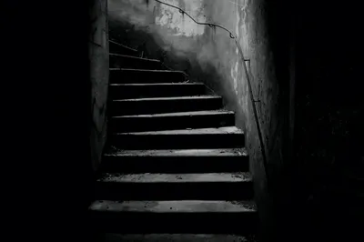
Bangour, before the diggers
The abandoned place I photographed most is Bangour Village Hospital, in the countryside west of Dechmont in West Lothian, Scotland. It opened in October 1906 as the Edinburgh District Asylum, built on the continental "village system": not a single institution looming over its inmates, but a scatter of villas across parkland, with its own power station, workshops, bakery, kitchen, laundry, and eventually its own church and railway. The idea, radical for its time, was that people in psychiatric care should live somewhere shaped like a life. It's something of a rarity to look at history and feel a bit of pride, but here's a nice example (click below for better quality).
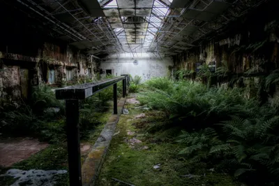
History kept interrupting the little care village. The War Office requisitioned the site in both world wars: during the second, a specialist burns and plastic surgery unit set up there in 1940, seeding what became Bangour General Hospital next door. Psychiatric care returned between and after the wars and wound down slowly for decades; the last ward closed in 2004. Then, for twenty years, the village was empty, a listed Edwardian ghost town, which is when I walked its corridors with my Canon 60D.
I was not the first to see the beauty in the ruins. The film industry found the empty hospital too: it stood in as the asylum in The Jacket (2005), which put Adrien Brody and Keira Knightley into the same corridors, with better lighting and a catering truck. There's something fitting about a place built to be a village ending its working life playing one on camera, and the location scouts and I clearly agree on what those wards look like: somewhere between memory and horror, depending on the light.
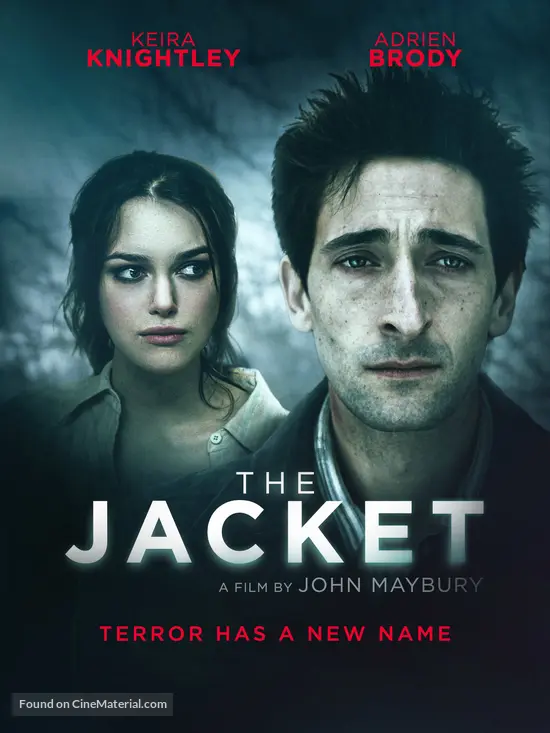
The window has now closed: the site is becoming housing. West Lothian Council approved nearly a thousand homes in late 2024, and construction started in 2025. I have complicated feelings about this, homes are a better use of land than entropy, and yet - it's a beautiful place I wish I had more time to visit. Every photograph in my Bangour set changed category the day the first digger arrived: they used to be pictures of a place, and now they're records of one. That's the strange dividend of this hobby. You think you're taking moody photos; you turn out to have been doing amateur archival work. This is, I realise, a theme I frequent.
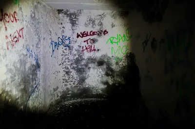
Why ruins photograph so well
Partly it's light: broken roofs do things with shafts of sun lighting up rooms in ways that are unnatural, or perhaps weirdly natural in the artificial places. Partly it's texture, forty years of peeling paint and ferns growing from between tiles speaks to us about time, and how in a blink of an eye things become and become undone.
There's also levels of age, eras shown in rot. Graffiti and ancient beer bottles show that others have explored these ruins when they were perhaps fresher, and the security doors and warning signs about CCTV cameras make it feel forbidden.
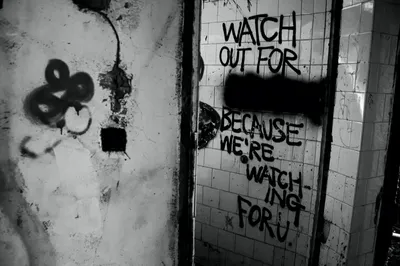
The ethics of photographing decay
"Ruin porn" is a reasonable charge, and the only defence is conduct. The photographs in this post exist because a place was open and I walked in with a camera. Three rules cover what many of us urbex photographers adhere to.
- Take nothing but photographs. Nothing gets pocketed, moved for a better composition, or "rescued." The scattered papers in that corridor are still scattered exactly as I found them. This is, in part, to not make it obvious I intruded upon the place, so that security isn't tightened, preventing others from experiencing it. It's also something of respect for the natural collapse of a place, allowing us to capture this descent, to see the "what if humans just disappeared one day?" question with visuals.
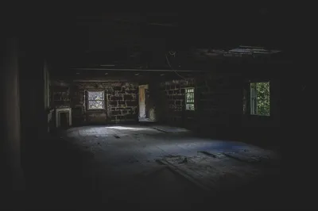
© Ken Reid. All rights reserved. - Force nothing. If a place isn't open to walk into, the visit doesn't happen. No cut fences, no pried boards, no "it was already broken so." Beyond the obvious legal line, and the law varies enough by country that you should know yours before you go, forcing entry is what turns documentation into damage.
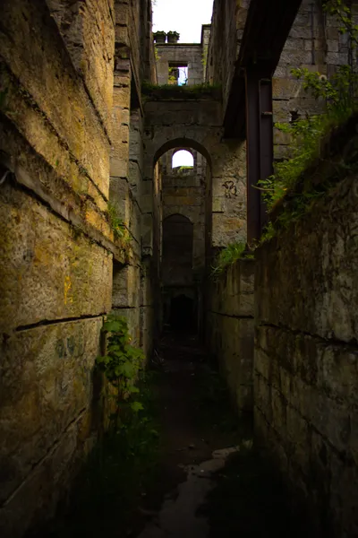
© Ken Reid. All rights reserved. - Don't publish the way in. I'll name Bangour because it's famous, documented, and now a construction site; I don't share access details for anywhere fragile. Every ruin that goes viral with directions attached gets stripped and burned within the year.
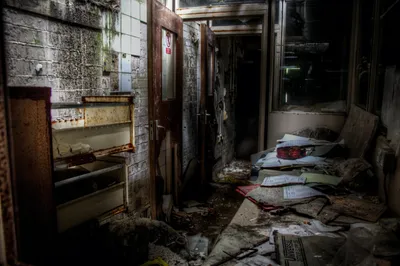
I'll add a fourth, more personal one: be safe, and bring a friend. If you're somewhere abandoned, you don't know who you'll find there, and walking around with a four to five figure costing camera may lead to desperate people taking something you'd rather keep.
Why bother?
Because the maintained world is thoroughly photographed and the unmaintained one is disappearing. Because it answers that previous question about what if humans disappeared. Because there's history in old places, stories and a silence that can somehow capture with a camera.
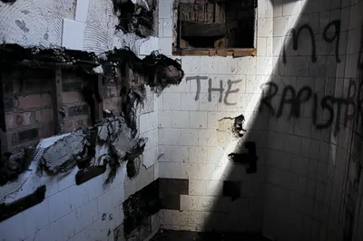
Respect
A psychiatric hospital is not a neutral ruin. Thousands of people lived entire lives at Bangour: some helped by it, some failed by it, in an era when society's record on mental illness was grim. Photographing their ward as a spooky backdrop would be a small desecration, at least without recognizing it for what it is. The village system deserves to be remembered as what it was: an attempt, flawed but with good intentions, to build kindness at institutional scale.
An office in the dark, partitions still standing to attention, ceiling tiles mid-collapse. Whatever the last shift was working on, they left much of it on the shelves and the desks.
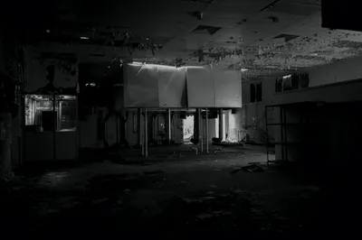
- For the people nearby. Ruins have neighbours: farmers whose fences get climbed, families whose street fills with strangers after a site trends, a security guard paid too little to argue with anyone. Being polite and willing to leave when asked costs a photographer nothing and buys the whole hobby its tolerance.
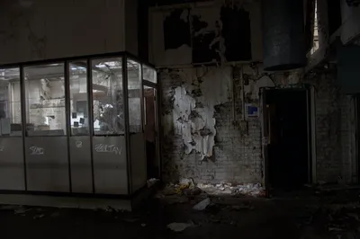
© Ken Reid. All rights reserved. - For the dead and the grieving. Hospitals, asylums, and churches intersect with the worst days of real families, some of whom are alive and searching the same hashtags you post under. Shoot and write with respect.
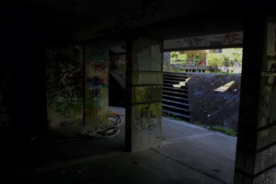
© Ken Reid. All rights reserved. - For the building itself. No tagging, no smashing "for the shot," no souvenirs.
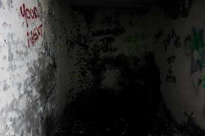
© Ken Reid. All rights reserved. - For other explorers. Passing on a site's condition, hazards, and history is generosity.
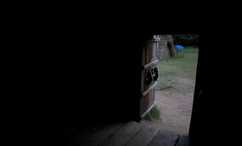
Safety
None of the above matters if the floor collapses under you. A decaying building is indifferent to your intentions, and the most common dangers are not the stranger in the dark, it's the joist that rotted through in 2011. The working checklist, assembled from cautious people and a couple of my own near-misses:
- Floors and stairs lie. Rot hides under intact-looking boards, and a staircase that held the last visitor has one fewer life left than it did. Stay near walls where the structure is strongest, test before trusting.
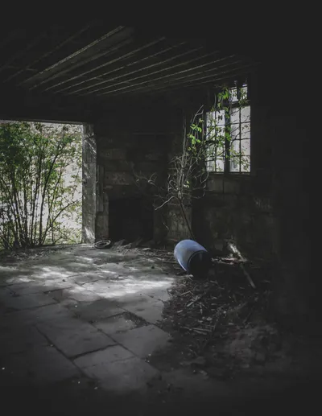
© Ken Reid. All rights reserved. - The air has history. Buildings of Bangour's era mean asbestos, lead paint, pigeon droppings, and mould in quantities you cannot see. Disturb as little dust as possible, skip the crawl spaces. A decent mask is always a wise decision.
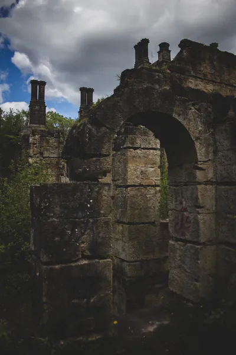
© Ken Reid. All rights reserved. - Go in daylight, leave a margin. Light is the photographer's excuse, but it's also the difference between seeing the missing floorboard and finding it. Arrive with hours to spare and leave while you can still find the exit without a torch. Bring a torch, just in case, anyway.
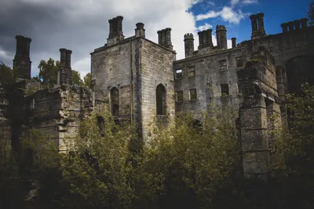
© Ken Reid. All rights reserved. - Never alone, always announced. Two people minimum, and someone at home who knows the site and when to expect a check-in. A twisted ankle in an empty building with no signal is a story with company and an emergency without.
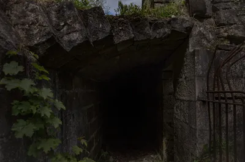
© Ken Reid. All rights reserved. - Dress for the building, not the photos. Boots with soles that shrug off nails, gloves, long sleeves. Tetanus sucks.
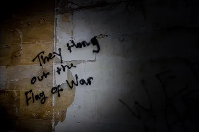
© Ken Reid. All rights reserved. - Know when to stop. Fresh collapse, a smell of gas, sounds of people who don't want company, or the plain sense that something is wrong: any of these ends the visit.
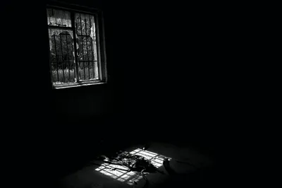
Twenty photographs, several buildings, one country. Scotland is unusually rich in these places: industrial decline, rural depopulation, and a century of ambitious institutional architecture left it with more empty grandeur per square mile than you would think.
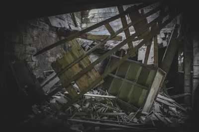
Common questions
Is urban exploration legal?
It depends entirely on where you are and how you enter: the law differs between Scotland, England, the US, and everywhere else, both on accessing land and on entering buildings, and I'm a photographer, not a solicitor.
Do you break into places?
No. If it isn't open enough to walk into, I photograph the outside or I go home.
Why won't you say how to get into sites?
Because the record shows what happens next: publicity strips a site of its artefacts, then its copper, then, with unfortunate regularity, someone burns it down.
Isn't this just aestheticising other people's misfortune?
It can be, which is why the conduct matters more than the composition. A closed hospital documented with context and respect is memory work. I try to stay on the right side of that line, and writing this post is partly a way of being accountable to it.